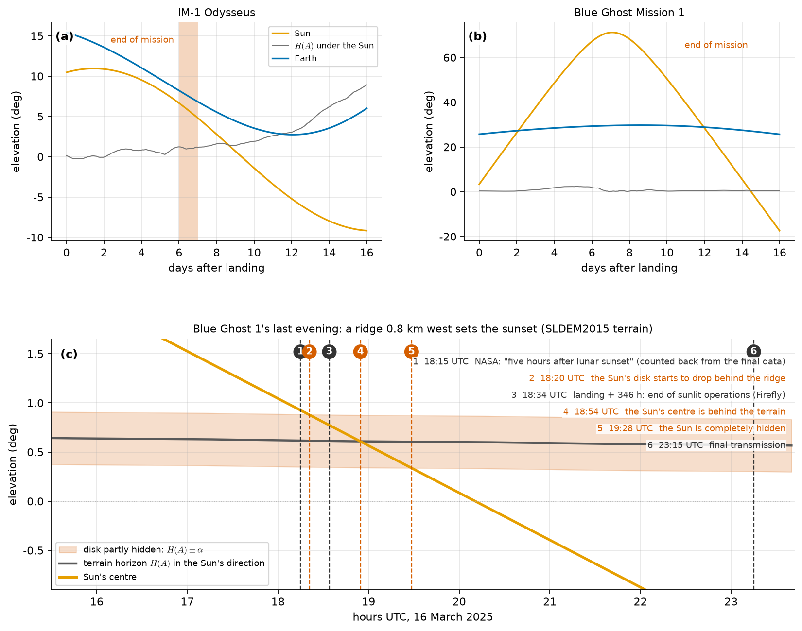
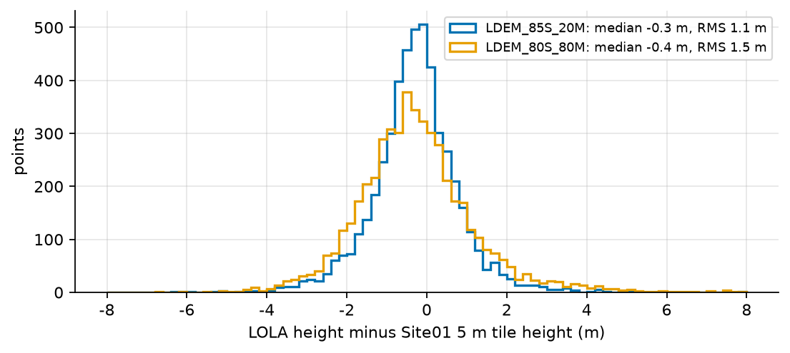

Why you can trust the numbers
Each step is checked against an independent source, and the limits are stated. The guide explains each check: Section 5 · Video series: how the positions are computed
Seven checks, each against something we did not produce
Tolerances are set in the code (validation/thresholds.py in the source repository) and the tests fail if a result leaves them. A row marked reported has no tolerance because the comparison is not like for like; the other tabs explain why.
How the code itself is tested
- Exact answers. Geometry, disk fractions and horizon tracing are checked on cases with a known result: a smooth sphere's horizon dip, a disk cut by a flat horizon, synthetic terrain.
- Hand calculations. The worked examples in the overview PDF, the Sun-array energy and the DSN geometry are checked against numbers worked by hand.
- Locked results. The headline numbers at the real sites are fixed in tests. A change must be explained by a physical cause, never by editing the expected value.
- Outside evidence. The table above, re-run whenever the pipeline changes.
- Browser against Python. The Python is the reference; fixtures it writes are held by
npm test(in the source repository), and the button on the Directions tab re-computes every spot in your browser.
Sun and Earth directions vs JPL Horizons
Help
- 4 lunar sites, a check every 37 days, 2024–2030.
- The table shows the worst angle between our direction and JPL's.
- 1″ = 1/3600°. The Sun's disk is about 1900″ across.
- This checks our geometry (time, frames, light time, parallax), not JPL's ephemeris: both rest on JPL's data.
Help
- 4 lunar sites, a check every 37 days, 2024–2030.
- The table shows the worst angle between our direction and JPL's.
- 1″ = 1/3600°. The Sun's disk is about 1900″ across.
- This checks our geometry (time, frames, light time, parallax), not JPL's ephemeris: both rest on JPL's data.
This browser vs the Python reference
Recompute 2027 for every candidate spot here and compare.
Long-term illumination vs NASA's maps
All candidate spots
A peer-reviewed benchmark: Barker et al. (2021)
Blue Ghost 1: the last sunset
IM-1: an independent height check

Apollo: the Sun's angle in 1969 to 1971
Three elevation maps agree

The 5 m, 20 m and 80 m maps agree to about 1–1.5 m where they overlap. Projections, orientation and heights are read correctly.
What the model does not do
| Limit | What it means for you | Pages it affects |
|---|---|---|
| Small hazards: 5 m maps cover only the 13 NASA site tiles; beyond them the skyline uses 20 m, 80 m and 474 m maps, and nothing smaller than a pixel is resolved. | A boulder or a small crater at a spot is invisible to the model. Check landing hazards separately. | Map, Explorer, Planner, Rank, Compare |
| Uniform Sun: no limb darkening. | Whether the Sun is up is unaffected. The first and last sliver of a sunrise is slightly dimmer in reality than shown. | Explorer, Planner |
| Earth in view means any part of the disk. Every time is on a 15-minute grid. | A gap shorter than 15 minutes can be missed, and Earth counts as in view when only a sliver of it shows. | Explorer, Planner, Rank, Windows, Compare |
| One map: no error ensemble (Barker et al. ran 100). | The skyline is the map's, not a range of possible skylines. The +0.25° test shows how much an error could matter. | Planner, Rank, Compare |
| Earth in front of the Sun (eclipses): when Earth crosses the Sun as a lander sees it, the Sun is dimmed for a few hours, a few times a year. This is not modelled and could lengthen a dark stretch or darken a sunlit one. | A night can be a few hours longer, or a lit spell a few hours shorter, than the app says in a season when Earth crosses the Sun. | Explorer, Planner, Rank, Windows, Compare |
| A darkness limit, not a power budget. Sun energy is light only (Wh per W of a Sun-tracking upright array, the same number as the hours of full Sun it collects); a Sun-tracking upright array suits the low polar Sun and understates the light at a high one; there is no lander power, battery or temperature model. | Passing a darkness limit does not mean a lander has enough power. Check it with the lander's thermal and power team. | Planner, Rank, Windows, Compare |
| Mission terrain: 59 m at Blue Ghost 1, 20 m at IM-1 and IM-2. | The flown landers' results are only as sharp as those maps. | Explorer |
| Away from the pole: the 474 m global map only. | Sunrise and sunset there can be an hour or more off. Sun and Earth positions are exact. | Explorer, Whole Moon |
| Custom points: a 20 m crop and a 480 m far field, not the 5 m map. | Sunlight is close to the 5 m result, but the longest night can be off by hours, and at worst by days. | Map, Explorer, Planner, Rank, Windows |
| Times: a 0.1° horizon error can shift a polar sunrise by minutes to hours. Trust percentages more. The Explorer and the Planner test this directly by raising the skyline by 0.1° and 0.25°. | Trust shares and durations more than exact clock times. | Explorer, Planner, Rank |
Scripts: validation/ and pipeline/export_evidence.py, in the source repository (not part of the packaged build). The guide, LunaZen: How the App Works (How We Know It Is Right), explains each check.
References: JPL Horizons; Mazarico et al. (2011); Barker et al. (2021); LROC (IM-1); Firefly Aerospace (Blue Ghost 1).